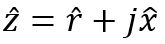
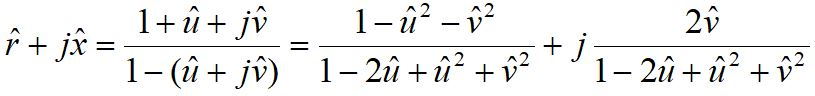

El Coeficiente de Reflexión en términos de imperancia normalizada está definido por la siguiente ecuación
Solucionando esta para la impedancia normalizada obtenemos la ecuación:
Ambas son variables complejas y pueden representarse en términos de su parte real y su parte imaginaria, es decir

La impedancia normalizada tiene parte real resistiva (r) y parte imaginaria reactiva (x), mientras que para el Coeficiente de Reflexión representaremos su parte real con la variable u y su parte imaginaria con v.
Sustituyendo en la ec. 2 obtenemos

Separando las partes real e imaginaria de esta ecuación se obtienen
La ecuación 3 representa a una familia de círculos de resistencia constante con centro en y radio de valor y la ecuación 4 representa a una familia de círculos de reactancia constante con centro en y radio de valor .